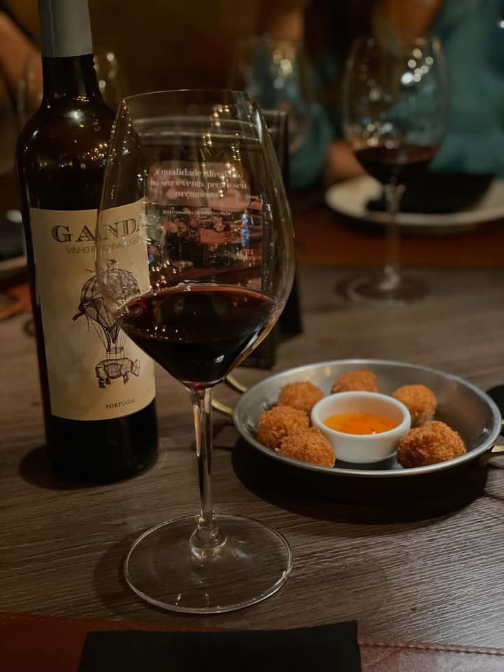

Conheça nossos vinhos
A Vinheria Agnello oferece diferentes tipos de vinhos para diversos gostos, ocasiões e harmonizações.

Produtos
Confira alguns dos principais tipos de vinhos da Vinheria Agnello:
Vinho Tinto
O vinho tinto possui sabores e aromas marcantes sendo uma ótima escolha para acompanhar refeições mais intensas.
Harmonização carnes vermelhas, massas com molhos encorpados e queijos fortes.
Vinho Branco
O vinho branco é refrescante e ideal para acompanhar pratos leves e frutas.
Harmonização peixes, frango e queijos cremosos.
Vinho Rosé
O vinho rosé é leve e refrescante, perfeito para acompanhar pratos leves e saladas.
Harmonização frutas, saladas e queijos frescos.
Vinho Espumante
O vinho espumante é ideal para comemorações e pode ser servido como aperitivo ou com pratos leves.
Harmonização frutas, saladas e queijos frescos.
Precisa de ajuda para escolher o vinho ideal?
Estamos aqui para ajudar você a encontrar o vinho perfeito para a sua ocasião.
Entre em contato conosco para obter orientação personalizada.